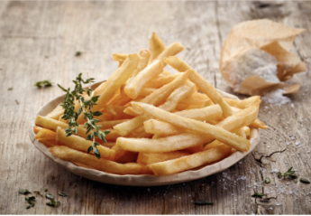

Papas fritas a la española
Recetas de papas fritas caseras

Ingredientes
- 3 o 4 papas (300 gr.)
- Aceite
- Sal
Elaboración (Pasos)
- Pelar las papas
- Cortarlas en bastón
- Calenta aceite en una sartén
- Cocinar hasta que estén doradas
- Removerlas del aceite y salar al gusto